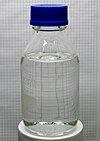

sulfuric-acid

Has synonym(s): sulphuric-acid
Definition: Sulfuric acid (American spelling and the preferred IUPAC name) or sulphuric acid (Commonwealth spelling), known in antiquity as oil of vitriol, is a mineral acid composed of the elements sulfur, oxygen, and hydrogen, with the molecular formula H2SO4. It is a colorless, odorless, and viscous liquid that is miscible with water.Pure sulfuric acid does not occur naturally due to its strong affinity to water vapor; it is hygroscopic and readily absorbs water vapor from the air. Concentrated sulfuric acid is highly corrosive towards other materials, from rocks to metals, since it is an oxidant with powerful dehydrating properties. Phosphorus pentoxide is a notable exception in that it is not dehydrated by sulfuric acid but, to the contrary, dehydrates sulfuric acid to sulfur trioxide. Upon addition of sulfuric acid to water, a considerable amount of heat is released; thus, the reverse procedure of adding water to the acid should not be performed since the heat released may boil the solution, spraying droplets of hot acid during the process. Upon contact with body tissue, sulfuric acid can cause severe acidic chemical burns and even secondary thermal burns due to dehydration. Dilute sulfuric acid is substantially less hazardous without the oxidative and dehydrating properties; however, it should still be handled with care for its acidity.
Source: Wikipedia
Wikipedia Page (Something wrong with this association? Let us know.)
Wikidata Page (Something wrong with this association? Let us know.)
Occurs in: